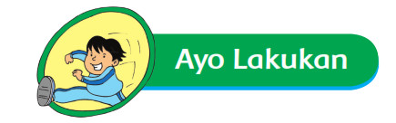
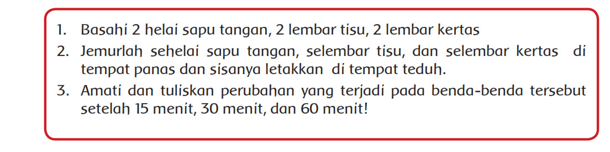
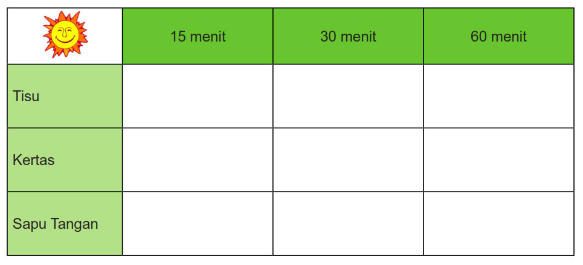
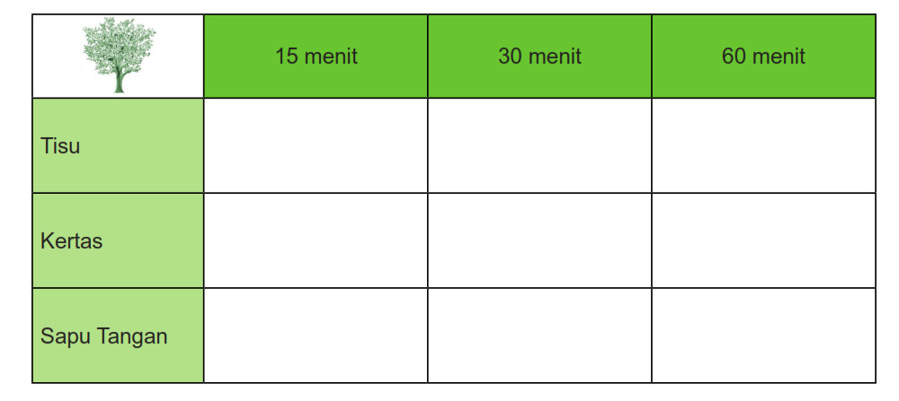
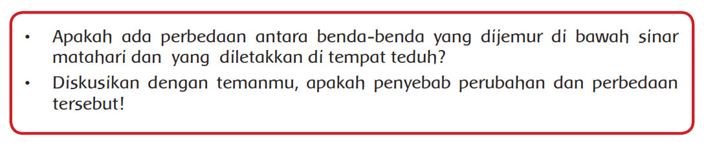

Ayo Lakukan
Aktivitas

Beni ingin mem buktikan panas matahari sebagai sumber energi yang penting bagi
kelangsungan mahluk hidup. Ayo kita bantu Beni untuk membuktikannya!
Lakukan percobaan ini di luar kelas!

Sambil menunggu saat pengamatan, kamu bisa membaca kisah Ali Si Biji Energi di
halaman 14.
Tabel Pengamatan :


